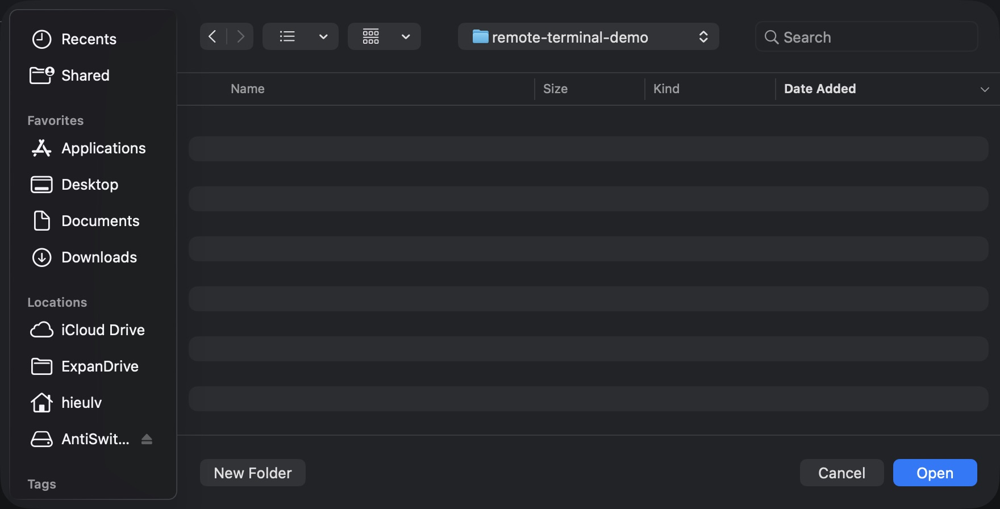
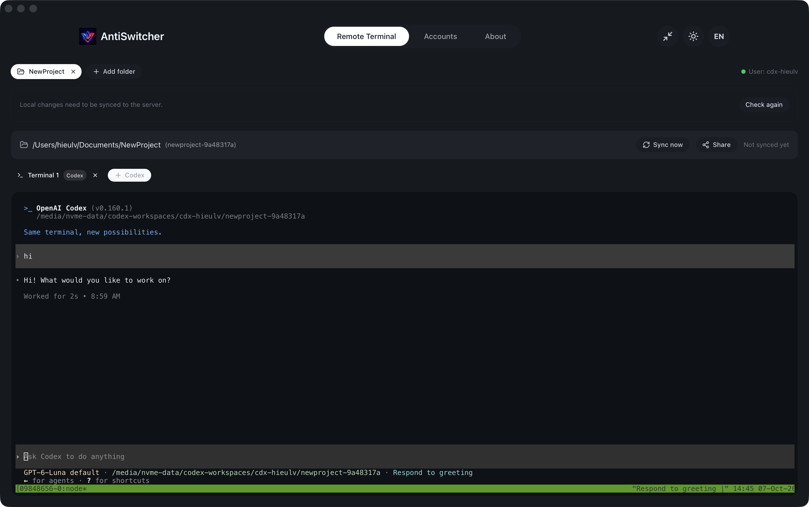

01Chuẩn bị trước khi bắt đầu
- Mở ứng dụng AntiSwitcher trên máy tính và chọn mục Remote Terminal trên thanh điều hướng.
- Chuẩn bị tài khoản SSO công ty có quyền truy cập dịch vụ terminal và kết nối mạng đến máy chủ.
- Tạo một thư mục trống trên máy, ví dụ
remote-demo, để làm nơi lưu dự án mới.
Thư mục phải trống hoàn toàn. Ứng dụng kiểm tra cả file ẩn và thư mục con. Không chọn thư mục dự án đã có mã nguồn hoặc đã chứa .git khi thêm dự án mới.
02Đăng nhập & tạo dự án đầu tiên
- Bấm Đăng nhập SSO. Ứng dụng mở trình duyệt để xác thực.
- Hoàn tất đăng nhập bằng tài khoản công ty, rồi quay lại AntiSwitcher. Sau khi thành công, màn hình hiển thị tên Người dùng và nút Thêm thư mục.
- Bấm Thêm thư mục và chọn thư mục trống đã chuẩn bị. Một tab thư mục mới xuất hiện.
- Chờ ứng dụng kiểm tra workspace. Bấm Codex hoặc Claude Code để mở terminal. Với dự án mới vẫn còn trống, ứng dụng tự đồng bộ workspace trước khi mở.
- Nếu muốn xác nhận workspace trước, bấm Đồng bộ ngay, chờ hoàn tất rồi mở công cụ.
Chỉ thấy nút Codex? Các nút công cụ phụ thuộc vào công cụ được máy chủ cài đặt và bật. Claude Code chỉ xuất hiện khi máy chủ hỗ trợ.
Nếu đã thêm file vào thư mục sau khi chọn nhưng chưa đồng bộ lần đầu, hãy bấm Đồng bộ ngay trước khi mở terminal.

03Làm việc với terminal
Bấm vào vùng terminal, nhập yêu cầu cho công cụ và nhấn Enter. Công cụ chạy trên máy chủ, sử dụng workspace tương ứng với tab thư mục đang chọn.

Nhiều thư mục
Mỗi tab thư mục có workspace và các terminal riêng. Bấm tên thư mục để chuyển dự án.
Nhiều terminal
Bấm nút công cụ để mở thêm terminal trong cùng thư mục. Bấm tab terminal để chuyển phiên; lịch sử hiển thị được giữ khi chuyển tab.
Đóng terminal
Bấm dấu × trên tab terminal để đóng phiên tương ứng. Kiểm tra công việc đang chạy trước khi đóng.
Đóng thư mục
Bấm dấu × trên tab thư mục. Nếu còn terminal, ứng dụng yêu cầu xác nhận đóng và dừng tất cả terminal của thư mục đó.
Khi mở lại màn hình hoặc khởi động lại ứng dụng, hệ thống thử khôi phục các tab và terminal đã lưu nếu thông tin truy cập còn hợp lệ.
04Đồng bộ workspace đúng chiều
Đồng bộ ngay đưa file từ máy tính lên máy chủ. Khi có thay đổi trên máy chủ cần lấy về, dùng Đồng bộ về máy. Bấm Kiểm tra lại để cập nhật trạng thái trước khi thao tác.
Đồng bộ có thể ghi đè và xóa file ở phía nhận. Thao tác tạo bản sao theo phía nguồn, bao gồm xóa file không còn tồn tại ở nguồn trong phạm vi đồng bộ. Hãy kiểm tra đúng chiều và lưu các thay đổi cần giữ trước khi đồng bộ.
| Thông báo / trạng thái | Cách xử lý |
|---|---|
| Đang kiểm tra | Chờ kết quả kiểm tra workspace và phiên. |
| Workspace đang trống | Bấm Đồng bộ ngay để xác nhận, hoặc mở công cụ để tự đồng bộ dự án mới còn trống. |
| File local và server giống nhau | Bấm Đồng bộ ngay để xác nhận phiên workspace. |
| Có thay đổi local | Bấm Đồng bộ ngay để đưa thay đổi lên máy chủ. |
| Server hoặc phiên đã thay đổi | Bấm Đồng bộ về máy trước khi tải thay đổi local lên. |
| Workspace thuộc client khác | Commit và push thay đổi ở cả hai client theo thông báo, rồi bấm Kiểm tra lại. |
| Local và server xung đột | Commit, push và đối chiếu thay đổi với server, xử lý xung đột rồi kiểm tra lại. |
| Workspace và phiên đã đồng bộ | Có thể mở terminal và tiếp tục làm việc. |
| Chưa xác minh được workspace | Kiểm tra kết nối, bấm Kiểm tra lại; nếu vẫn lỗi, liên hệ quản trị dịch vụ. |
Sau khi công cụ tạo hoặc sửa file: bấm Kiểm tra lại. Khi trạng thái yêu cầu tải về và nút Đồng bộ về máy xuất hiện, bấm nút đó, chờ hoàn tất rồi mở thư mục local để xem kết quả.
06Xử lý sự cố thường gặp
Đăng nhập SSO không hoàn tất
Kiểm tra cửa sổ trình duyệt được mở và hoàn tất xác thực công ty. Nếu cần bắt đầu lại, bấm Hủy trong màn hình chờ rồi bấm Đăng nhập SSO lần nữa.
Thông tin SSO bị từ chối hoặc hết hiệu lực
Bấm Đăng nhập lại SSO trong thông báo để cấp lại quyền truy cập. Các tab thư mục được giữ nguyên. Sau khi đăng nhập, kiểm tra trạng thái workspace trước khi tiếp tục.
Chấm kết nối màu đỏ
Ứng dụng chưa kết nối được tới máy chủ remote. Kiểm tra mạng và khả năng truy cập dịch vụ, sau đó bấm Kiểm tra lại. Chỉ tiếp tục đồng bộ khi kết nối đã phục hồi.
Không thêm được thư mục
Chọn một thư mục mới, hoàn toàn trống. File ẩn hoặc thư mục con cũng khiến thư mục bị từ chối. Không xóa dữ liệu dự án đang có chỉ để làm trống thư mục.
Nút Đồng bộ ngay bị vô hiệu hóa
Chờ nếu đang đồng bộ. Đọc trạng thái workspace: có thể cần tải về máy, xử lý xung đột, commit/push ở client khác hoặc đăng nhập lại SSO. Bấm Kiểm tra lại sau khi xử lý.
API đồng bộ workspace trả lỗi 404
Dịch vụ terminal chưa hỗ trợ API workspace hoặc route phía server chưa được cấu hình. Liên hệ quản trị để cập nhật dịch vụ hoặc cấu hình route, rồi kiểm tra lại.
Đồng bộ báo không tìm thấy rsync
Máy tính cần có rsync để truyền file. Nhờ bộ phận hỗ trợ cài đặt rsync phù hợp với hệ điều hành rồi thử đồng bộ lại.
Terminal báo phiên làm việc đã kết thúc
Phiên terminal đó đã đóng. Kiểm tra SSO và trạng thái workspace, sau đó bấm nút công cụ để mở terminal mới.